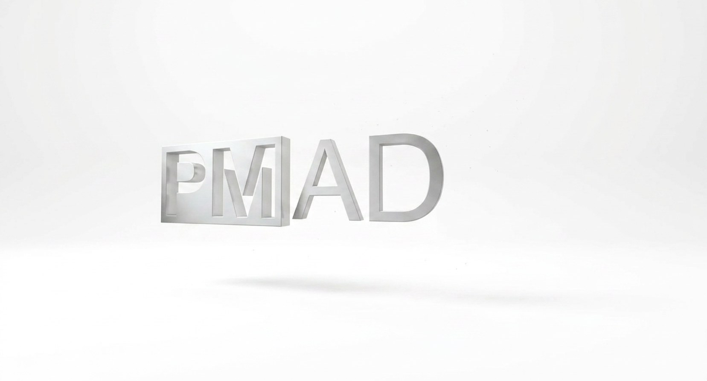

Bekijk alle beelden
Bekijk alle beelden
Woonboot Radder, Eijsden
Een volledig drijvende woning aan de oevers van de Maas, met een lange, transparante gevel gericht op het water.
PM|AD is het zelfstandige bureau van Pieter Mulder. Ik ontwerp rechtstreeks voor opdrachtgevers — met precisie, persoonlijke aandacht, en zonder omwegen.

Bij PM|AD werkt u rechtstreeks met de architect die uw ontwerp maakt — van eerste schets tot oplevering. Geen tussenlagen, geen wisselende contactpersonen. Alleen gerichte aandacht voor uw specifieke vraagstuk.
Of het nu gaat om nieuwbouw, renovatie of interieur: elk project begint met goed luisteren, en eindigt met een gebouw dat klopt — functioneel, ruimtelijk en in budget. Ik werk het liefst aan zowel het exterieur als het interieur van een project, zodat beide vanuit één visie ontstaan.
Twee recente projecten — van drijvende nieuwbouw tot een uitbouw in Amsterdam.
Bekijk alle beelden
Een volledig drijvende woning aan de oevers van de Maas, met een lange, transparante gevel gericht op het water.
 Bekijk alle beelden
Bekijk alle beelden
Herindeling en uitbreiding tot een ruime, lichte woonlaag met een groene tuinkamer als overgang naar buiten.
Neem vrijblijvend contact op — ik denk graag mee, van eerste schets tot uitvoering.